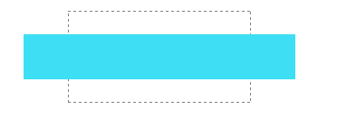

语法：
transform:scale(x,y) | scaleX(x) | scaleY(y) | scaleZ(z) | scale3d(x,y,z)
说明：
scale()将元素根据中心原点进行缩放
（1）scaleX(x)：元素仅水平方向缩放（X轴缩放）；x表示元素沿着水平方向（X轴）缩放的倍数，如果大于1就代表放大；如果小于1就代表缩小。
（2）scaleY(y)：元素仅垂直方向缩放（Y轴缩放）；y表示元素沿着垂直方向（Y轴）缩放的倍数，如果大于1就代表放大；如果小于1就代表缩小。
（3）scale(x,y)：元素水平方向和垂直方向同时缩放（X轴和Y轴同时缩放）；x表示元素沿着水平方向（X轴）缩放的倍数，y表示元素沿着垂直方向（Y轴）缩放的倍数。
注意，Y是一个可选参数，如果没有设置Y值，则表示X、Y两个方向的缩放倍数是一样的（同时放大相同倍数）。
3D的还未普及，以后完善
使用方法：
transform:scaleX(1.5);; /*水平方向放大1.5倍*/
兼容性：
- 浅绿 = 支持
- 红色 = 不支持
- 粉色 = 部分支持
| 支持版本\类型 | IE | Firefox | Safari | Chrome | Opera |
|---|---|---|---|---|---|
| 版本 | 6-8 | 4-18 | 5.1.7 | 13-23 | 11.5-12.5 |
| 版本 | 9-10 |
ie9 以上，和高版本浏览器。不过transform都要加上对应的前缀，-o,-moz,-webkit,-ms
Internet Explorer 10、Firefox、Opera 支持 transform 属性。
Internet Explorer 9 支持替代的 -ms-transform 属性（仅适用于 2D 转换）。
Safari 和 Chrome 支持替代的 -webkit-transform 属性（3D 和 2D 转换）。
Opera 只支持 2D 转换。
事例：
scaleX(x)
div{
width:200px;
height:100px;
color:white;
background-color: #3EDFF4;
text-align:center;
transform:scaleX(1.5);
-webkit-transform:scaleX(1.5); /*兼容-webkit-引擎浏览器*/
-moz-transform:scaleX(1.5); /*兼容-moz-引擎浏览器*/
}
scaleY(y)
div{
width:200px;
height:100px;
color:white;
background-color: #3EDFF4;
text-align:center;
transform:scaleY(1.5);
-webkit-transform:scaleY(1.5); /*兼容-webkit-引擎浏览器*/
-moz-transform:scaleY(1.5); /*兼容-moz-引擎浏览器*/
}
scale(x,y)
div{
width:200px;
height:100px;
color:white;
background-color: #3EDFF4;
text-align:center;
transform:scale(1.5,0.5);
-webkit-transform:scale(1.5,0.5); /*兼容-webkit-引擎浏览器*/
-moz-transform:scale(1.5,0.5); /*兼容-moz-引擎浏览器*/
}
